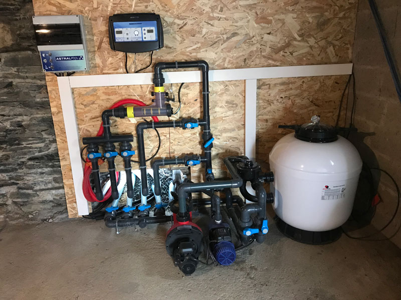

Welcome to our web site
Nettoyage piscine avec le balai de fond,
Nettoyage bassin avec le filet de surface,
Nettoyage à contre-courant et rinçage des éléments de filtration,
Brossage des parois et des marches,
Contrôle du bon fonctionnement de vos équipements (sans maintenance),
Vidange du panier de skimmer et du panier de la pompe
Test chimique complet
Ajout de produis chimiques
PISCINE
Professionnels et réactifs nos techniciens interviendront rapidement chez vous afin de solutionner vos divers problèmes.
Entretien piscine,
Gestion espaces verts,
Entretien aménagement extèrieurs,
Travaux divers,
Décoration intérieure,
Gardiennage villa.
Accueil de locataires
Orgnisation èvenement

PLOMBIER
MK.Maintenance est une entreprise spécialisé en plomberie. Nos artisans plombiers interviennent auprès des entreprises et des particuliers pour tous types de travaux : entretien, réparation et remplacement de chaudière et cumulus, rénovation de salle de bain, débouchage de canalisations.
à partir des plans le plombier va prendre connaissance du travail qu'il doit fournir. L'analyse des plans doit permettre de repérer les appareils et les réseaux, et de réaliser des fiches de travail
Electricité
* Etude,conception et conseil en ingénierie électrique
* Travaux d'électrification MT/BT
* Etude de réalisation d'éclairage sur mesure
* Electricité et maintenance industrielle
* Energie solaire (photovoltaique et thermique)